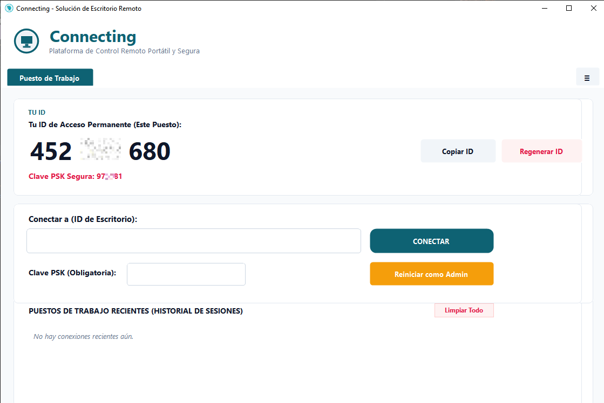
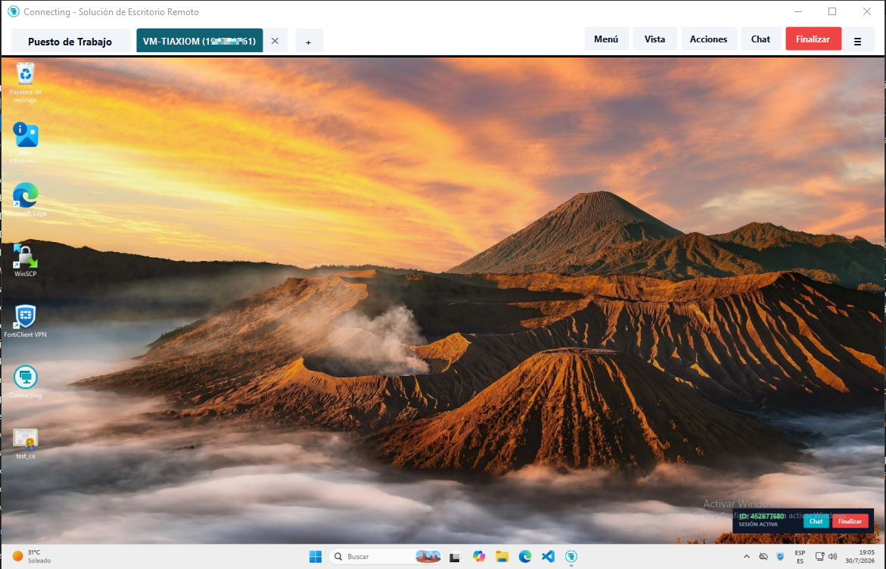

Acceso y asistencia remota cifrada de ultra baja latencia. Descarga Connecting y conéctate inmediatamente a cualquier equipo, o despliega opcionalmente un servidor propio para uso interno de tu organización.


Utilízalo de forma inmediata para asistencia remota rápida o implementa tu propio servidor de relevo privado (connecting-relay-server) para uso interno corporativo.
Descarga el ejecutable portátil de ~80 KB y comienza a conectarte inmediatamente a cualquier equipo introduciendo su ID de 9 dígitos sin configuraciones previas.
Para empresas o redes aisladas de TI, aloja el enrutador de sockets TCP en tu infraestructura local. Todo el tráfico de imágenes y comandos permanece dentro de tu red interna.
Configura tu propia Clave PSK Persistente en puestos clave para intervenciones rápidas y administra tu historial de conexiones con Hostname y Alias personalizados.
Diseño enfocado en velocidad nativa pura, cero dependencias pesadas y portabilidad extrema.
Aplicacion cliente compilada de forma nativa a un solo ejecutable .EXE portatil de ~80 KB. Sin instaladores ni servicios de fondo.
Inyeccion nativa SendInput con coordenadas absolutas de pantalla y mapeo de codigos de escaneo fisico (MapVirtualKey).
Servidor Relay privado On-Premise ligero escrito en Node.js para enrutamiento directo de sockets con cero bufer.
Comparativa directa frente a alternativas comerciales tradicionales.
| Característica | Connecting | Otras Herramientas | Sistemas Tradicionales | Servicios SaaS |
|---|---|---|---|---|
| Precio / Licencia | 100% Gratuito / Libre | Pago Mensual | Open Source | Pago Mensual |
| Despliegue Privado On-Premise | Incluido (Servidor propio) | Solo Plan Enterprise | Si | No permitido |
| Tamaño del Ejecutable | ~80 KB (Portatil) | ~15 MB | ~25 MB | ~60 MB |
| Elevación Admin Automática | Auto-elevación UAC | Si (Servicio) | Manual | Si (Servicio) |
| Clave PSK Persistente | Persistencia Guardada | Limitada | Si | Aleatoria |
| Hostname + Alias en Historial | Asignacion Visual de 1 Clic | Si | Solo ID | Solo ID |